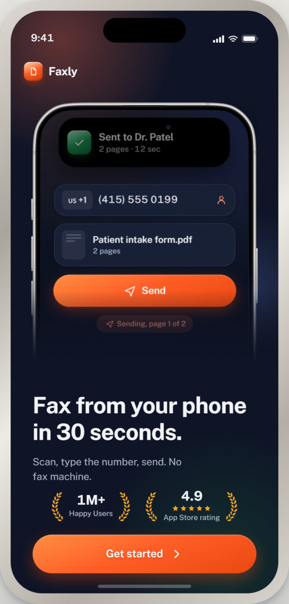
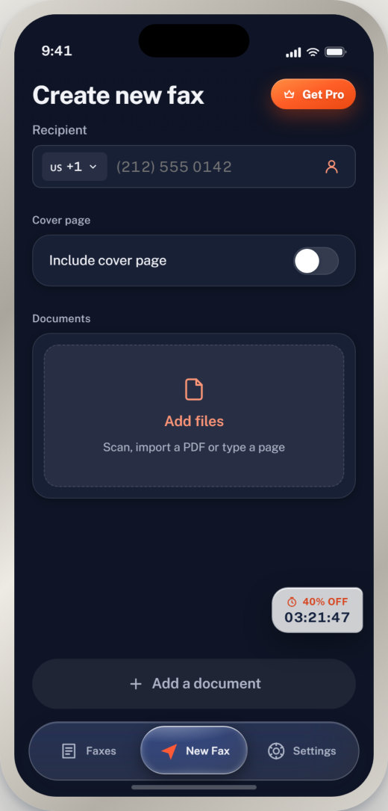
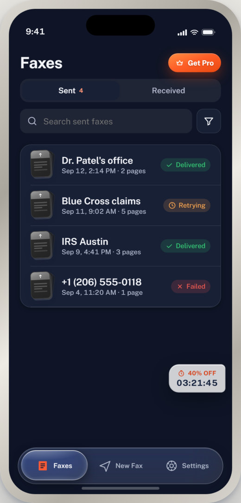

Faks makinesine gerek kalmadan telefondan faks gönderme uygulaması. Numarayı yaz, belgeyi ekle, gönder: akış üç adımda bitiyor. Koyu lacivert zemin üzerindeki turuncu aksiyon rengi, gönderim durumunu her ekranda görünür kılıyor.


